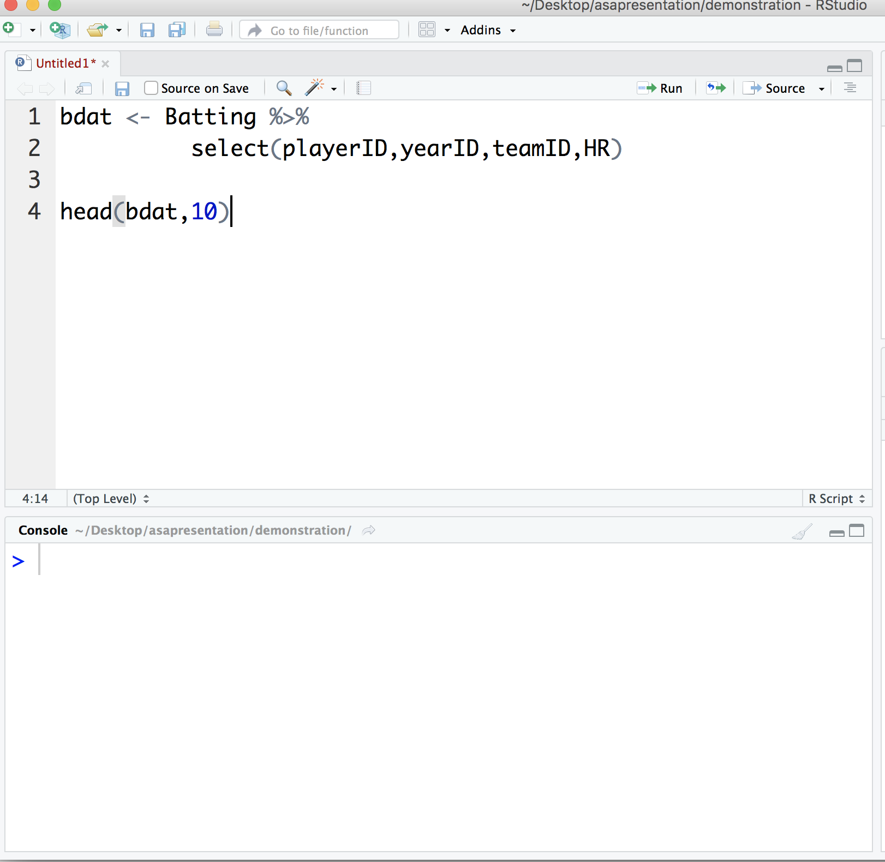
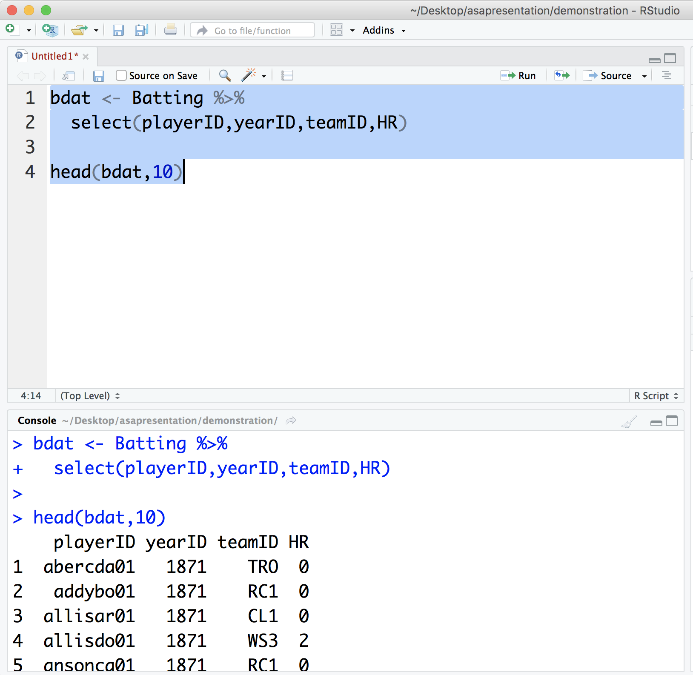

Chapter 6 Selecting, Filtering, and Arranging
6.1 Select
With dplyr, instead of seeing every column from a table, we may select the particular columns we are interested in. Type the following in the console and press enter:
bdat <- Batting %>% select(playerID,yearID,teamID,HR)Now type
head(bdat,10)## playerID yearID teamID HR
## 1 abercda01 1871 TRO 0
## 2 addybo01 1871 RC1 0
## 3 allisar01 1871 CL1 0
## 4 allisdo01 1871 WS3 2
## 5 ansonca01 1871 RC1 0
## 6 armstbo01 1871 FW1 0
## 7 barkeal01 1871 RC1 0
## 8 barnero01 1871 BS1 0
## 9 barrebi01 1871 FW1 0
## 10 barrofr01 1871 BS1 0Let’s see what is happening here. The select verb of dplyr allows you to select the columns you want to see. However, we need to indicate the data frame from which we wish to select. (What we have been calling “tables” are actually called “data frames” in R, so we will use that terminology from now on.) We use the symbol %% to pipe the Batting data frame into the select function. We store the result into a variable we have called bdat, a generic variable name for baseball data. bdat is now a data frame with just the four columns we have chosen. We view the first few rows of bdat with the head function.
6.2 Scripts
It’s time now to make use of the source panel. We will write our code in the source panel and then run it in the console. Let’s do the example above again, but we will try it this new way. Type the following in the source panel:

To run your code, select it and then click the Run icon:

From now on, we will run all of our code this way.
6.3 Filter
You will almost always want to see a subset of the records in a data frame intead of all of them. For instance, we may wish to see just the records where the HR value is 50 or more. For this, we can use the filter verb of dplyr. Type this code in the source panel and run it:
bdat <- Batting %>%
filter(HR >= 50) %>%
select(playerID,yearID,teamID,HR)
bdat## playerID yearID teamID HR
## 1 ruthba01 1920 NYA 54
## 2 ruthba01 1921 NYA 59
## 3 ruthba01 1927 NYA 60
## 4 ruthba01 1928 NYA 54
## 5 wilsoha01 1930 CHN 56
## 6 foxxji01 1932 PHA 58
## 7 foxxji01 1938 BOS 50
## 8 greenha01 1938 DET 58
## 9 kinerra01 1947 PIT 51
## 10 mizejo01 1947 NY1 51
## 11 kinerra01 1949 PIT 54
## 12 mayswi01 1955 NY1 51
## 13 mantlmi01 1956 NYA 52
## 14 mantlmi01 1961 NYA 54
## 15 marisro01 1961 NYA 61
## 16 mayswi01 1965 SFN 52
## 17 fostege01 1977 CIN 52
## 18 fieldce01 1990 DET 51
## 19 belleal01 1995 CLE 50
## 20 anderbr01 1996 BAL 50
## 21 mcgwima01 1996 OAK 52
## 22 griffke02 1997 SEA 56
## 23 griffke02 1998 SEA 56
## 24 mcgwima01 1998 SLN 70
## 25 sosasa01 1998 CHN 66
## 26 vaughgr01 1998 SDN 50
## 27 mcgwima01 1999 SLN 65
## 28 sosasa01 1999 CHN 63
## 29 sosasa01 2000 CHN 50
## 30 bondsba01 2001 SFN 73
## 31 gonzalu01 2001 ARI 57
## 32 rodrial01 2001 TEX 52
## 33 sosasa01 2001 CHN 64
## 34 rodrial01 2002 TEX 57
## 35 thomeji01 2002 CLE 52
## 36 jonesan01 2005 ATL 51
## 37 howarry01 2006 PHI 58
## 38 ortizda01 2006 BOS 54
## 39 fieldpr01 2007 MIL 50
## 40 rodrial01 2007 NYA 54
## 41 bautijo02 2010 TOR 54
## 42 davisch02 2013 BAL 53Note how we filter and then pipe the result into select. Note also that we did not use the head function to view bdat, since bdat is not large and therefore easy to view in its entirety.
There is a point worth highlighting here. Mark McGwire had a monster year in 1997, with 58 homeruns. His 1997 year, however, does not appear in our output above. Why is that? It is because he was traded mid-season from the A’s to the Cardinals. He therefore has two 1997 records in the data frame, one with 34 homeruns for the A’s, and another with 24 homeruns for the Cardinals.
6.4 Arrange
It might be nice to see the output above in a particular order, say with the most homeruns (Barry Bonds) at the top. You can use the arrange verb for this. Try the following:
bdat <- Batting %>%
filter(HR >= 50) %>%
select(playerID,yearID,teamID,HR) %>%
arrange(HR)
bdat## playerID yearID teamID HR
## 1 foxxji01 1938 BOS 50
## 2 belleal01 1995 CLE 50
## 3 anderbr01 1996 BAL 50
## 4 vaughgr01 1998 SDN 50
## 5 sosasa01 2000 CHN 50
## 6 fieldpr01 2007 MIL 50
## 7 kinerra01 1947 PIT 51
## 8 mizejo01 1947 NY1 51
## 9 mayswi01 1955 NY1 51
## 10 fieldce01 1990 DET 51
## 11 jonesan01 2005 ATL 51
## 12 mantlmi01 1956 NYA 52
## 13 mayswi01 1965 SFN 52
## 14 fostege01 1977 CIN 52
## 15 mcgwima01 1996 OAK 52
## 16 rodrial01 2001 TEX 52
## 17 thomeji01 2002 CLE 52
## 18 davisch02 2013 BAL 53
## 19 ruthba01 1920 NYA 54
## 20 ruthba01 1928 NYA 54
## 21 kinerra01 1949 PIT 54
## 22 mantlmi01 1961 NYA 54
## 23 ortizda01 2006 BOS 54
## 24 rodrial01 2007 NYA 54
## 25 bautijo02 2010 TOR 54
## 26 wilsoha01 1930 CHN 56
## 27 griffke02 1997 SEA 56
## 28 griffke02 1998 SEA 56
## 29 gonzalu01 2001 ARI 57
## 30 rodrial01 2002 TEX 57
## 31 foxxji01 1932 PHA 58
## 32 greenha01 1938 DET 58
## 33 howarry01 2006 PHI 58
## 34 ruthba01 1921 NYA 59
## 35 ruthba01 1927 NYA 60
## 36 marisro01 1961 NYA 61
## 37 sosasa01 1999 CHN 63
## 38 sosasa01 2001 CHN 64
## 39 mcgwima01 1999 SLN 65
## 40 sosasa01 1998 CHN 66
## 41 mcgwima01 1998 SLN 70
## 42 bondsba01 2001 SFN 73As you can see, this is almost what we want, except that we want the homeruns in descending order. You can use the desc function for this:
bdat <- Batting %>%
filter(HR >= 50) %>%
select(playerID,yearID,teamID,HR) %>%
arrange(desc(HR))
bdat## playerID yearID teamID HR
## 1 bondsba01 2001 SFN 73
## 2 mcgwima01 1998 SLN 70
## 3 sosasa01 1998 CHN 66
## 4 mcgwima01 1999 SLN 65
## 5 sosasa01 2001 CHN 64
## 6 sosasa01 1999 CHN 63
## 7 marisro01 1961 NYA 61
## 8 ruthba01 1927 NYA 60
## 9 ruthba01 1921 NYA 59
## 10 foxxji01 1932 PHA 58
## 11 greenha01 1938 DET 58
## 12 howarry01 2006 PHI 58
## 13 gonzalu01 2001 ARI 57
## 14 rodrial01 2002 TEX 57
## 15 wilsoha01 1930 CHN 56
## 16 griffke02 1997 SEA 56
## 17 griffke02 1998 SEA 56
## 18 ruthba01 1920 NYA 54
## 19 ruthba01 1928 NYA 54
## 20 kinerra01 1949 PIT 54
## 21 mantlmi01 1961 NYA 54
## 22 ortizda01 2006 BOS 54
## 23 rodrial01 2007 NYA 54
## 24 bautijo02 2010 TOR 54
## 25 davisch02 2013 BAL 53
## 26 mantlmi01 1956 NYA 52
## 27 mayswi01 1965 SFN 52
## 28 fostege01 1977 CIN 52
## 29 mcgwima01 1996 OAK 52
## 30 rodrial01 2001 TEX 52
## 31 thomeji01 2002 CLE 52
## 32 kinerra01 1947 PIT 51
## 33 mizejo01 1947 NY1 51
## 34 mayswi01 1955 NY1 51
## 35 fieldce01 1990 DET 51
## 36 jonesan01 2005 ATL 51
## 37 foxxji01 1938 BOS 50
## 38 belleal01 1995 CLE 50
## 39 anderbr01 1996 BAL 50
## 40 vaughgr01 1998 SDN 50
## 41 sosasa01 2000 CHN 50
## 42 fieldpr01 2007 MIL 50